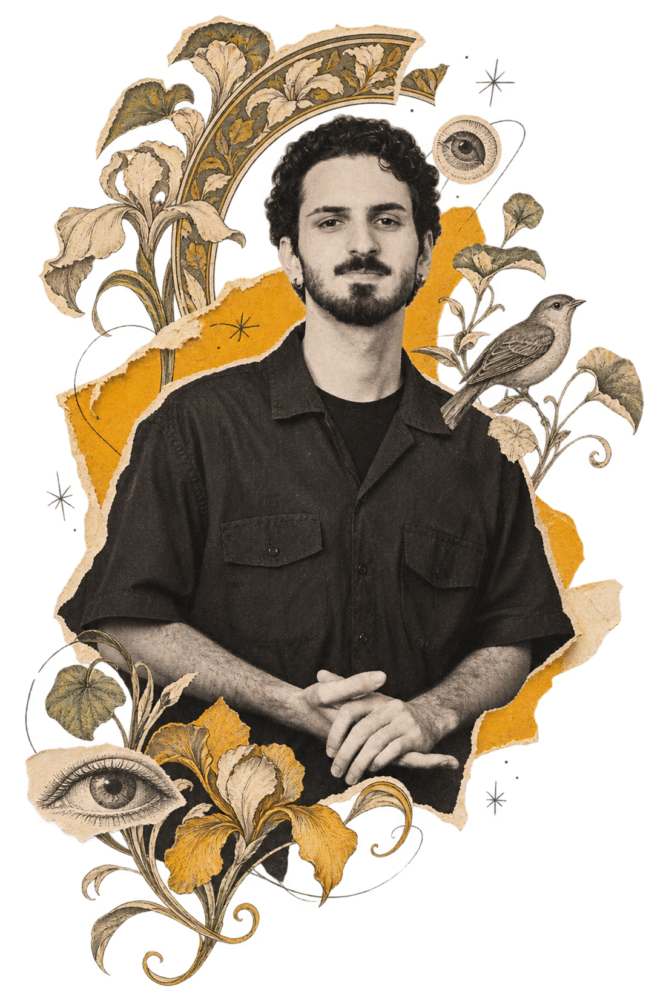
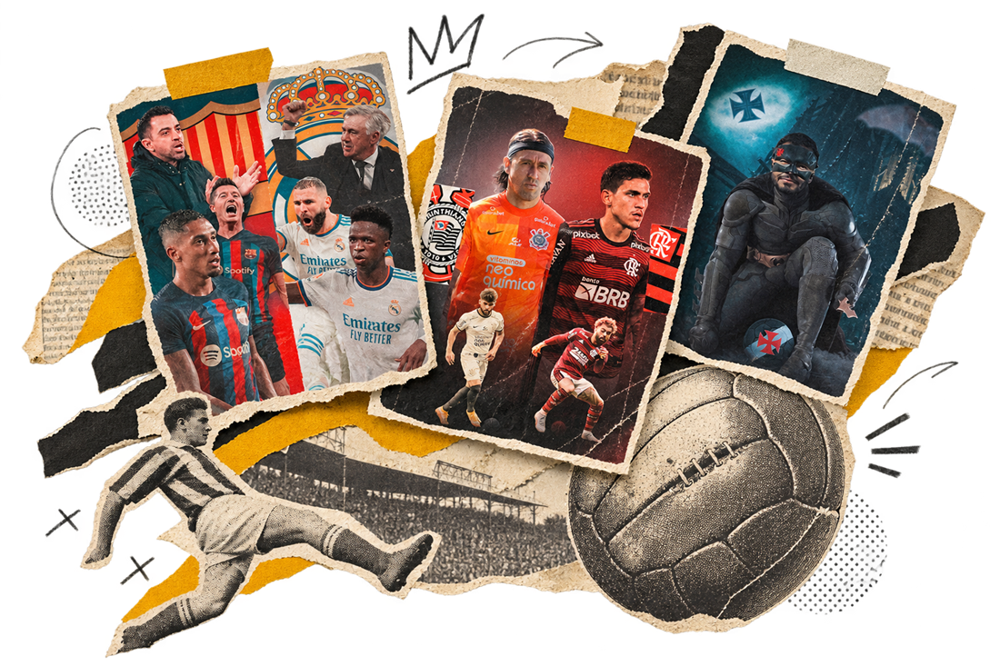
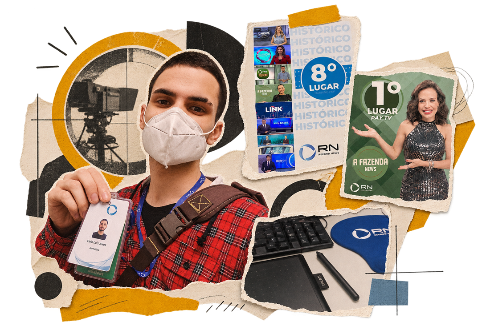
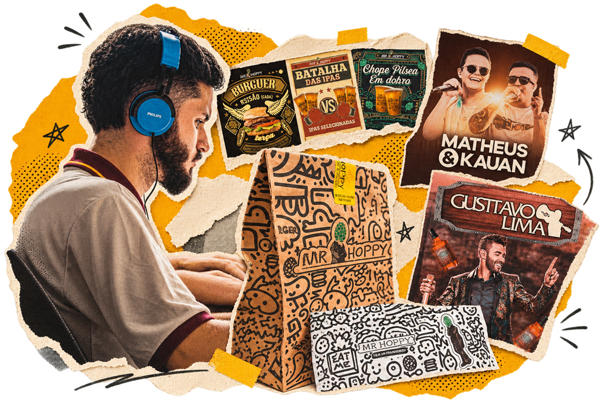
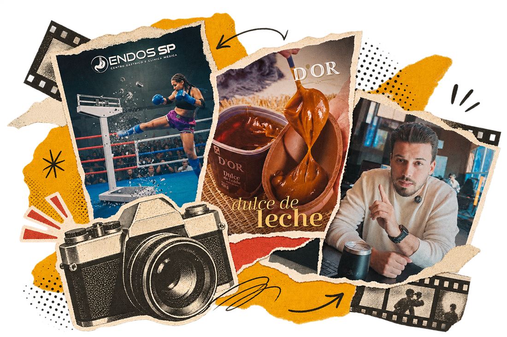
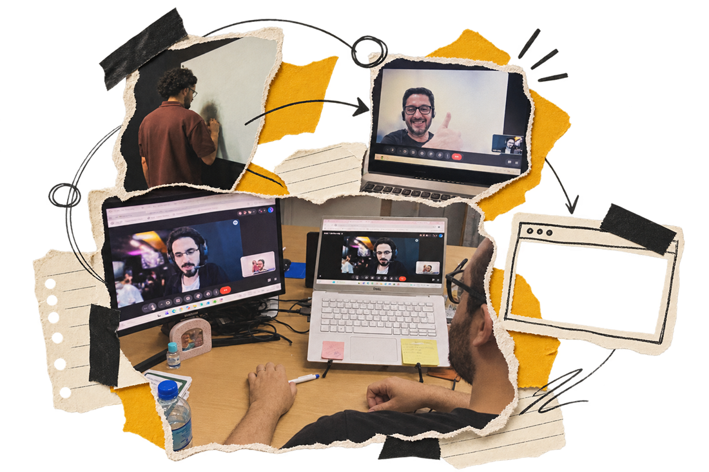
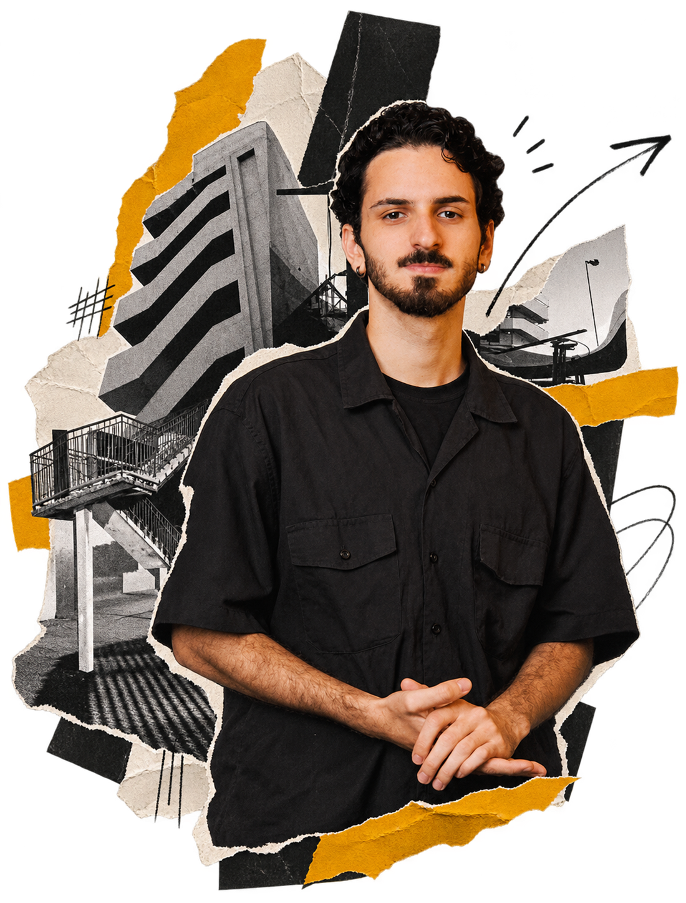

Apresentar sua marca
Identidade visual, embalagens e materiais para divulgar o seu negócio.
Sou Caio Cara. Desenvolvo marcas, produzo conteúdo e crio páginas e campanhas para atrair clientes. Também coordeno equipes e acompanho as entregas junto ao cliente.

Como freelancer, desenvolvi marcas desde o desenho do logotipo até a aplicação em materiais e embalagens. Aqui estão três desses projetos: um estúdio de tatuagem, um gin mexicano e uma marca de refrigerante.
Uma marca que funciona
até de ponta-cabeça.

Comecei como freelancer, criando peças para jogadores, equipes e páginas nas redes sociais. Também anunciei meus serviços e tive os primeiros contatos com mídia paga. Eu já precisava cuidar da criação, do atendimento e da entrega.
Design esportivo / primeiros projetos
Entrei na Record News como jovem aprendiz. Trabalhei com peças de comunicação, identidades para programas e motion graphics. Passei a criar dentro da rotina de uma emissora, trabalhando com a equipe nas demandas dos programas.
Algumas peças dessa fase ↓
Na Spazio, trabalhei como designer gráfico pleno. Criei flyers de shows, peças para redes sociais e campanhas com referências do rock.
Também desenvolvi embalagens para a rede Mr. Hoppy, utilizadas em todo o Brasil. A mesma marca precisava funcionar nas redes e nos materiais que chegavam às mãos do público.
Peças digitais e materiais impressos.
Na Endos SP, além dos criativos, passei a cuidar dos anúncios e da captação de interessados. Também roteirizei, gravei e editei vídeos para apresentar os tratamentos e responder às dúvidas de possíveis pacientes.
Na Veduc, ampliei minha atuação com campanhas no Google. No Portal Anhanguera, desenvolvi o web design e a estrutura de conteúdo para buscas e respostas de IA, além de coordenar o projeto.
Mais de 100 leads orgânicos por recomendações de IA, incluindo o ChatGPT.
Conheça o Portal Anhanguera ↗Artes, anúncios e acompanhamento da captação para duas instituições de ensino. Cada case apresenta seu período, as entregas e o cálculo do retorno.
No Intec, o retorno considera o repasse projetado em 12 meses. Na CIA, a relação usa o faturamento do ciclo. São bases diferentes; os cálculos estão nos cases.

Entrei na Veduc como analista de marketing e fui promovido a Customer Success. Além de executar, passei a alinhar os próximos passos com clientes, distribuir tarefas e acompanhar as entregas da equipe.
Na Escola Clara Luz, conduzi o início da parceria e coordenei o trabalho de marketing, tráfego e IA para apoiar a captação de matrículas.
Identidade visual, embalagens e materiais para divulgar o seu negócio.
Vídeos, criativos, páginas e anúncios conectados ao caminho até o atendimento.
Alinhamento com o cliente, distribuição de tarefas e acompanhamento do trabalho da equipe.
Cursos de growth
e inteligência artificial.

Me conte sobre o seu negócio e o que você precisa fazer agora. A partir daí, conversamos sobre como posso participar do projeto.
Falar comigo no WhatsApp ↗